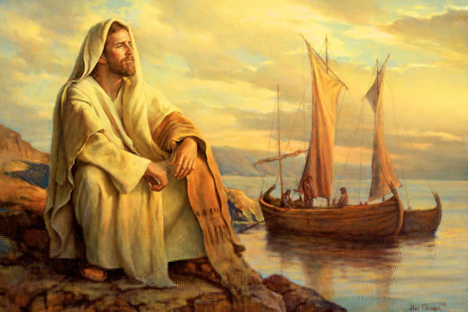

Leitura Orante do Evangelho
Leituras do Dia
São Gregório Magno - Papa e
Doutor da Igreja
Quinta-feira da 22ª Semana do Tempo
Comum
(Branco - Ofício da memória)
3 de setembro de 2020
Leitura Orante do Evangelho
Ouça o áudio da oração e reflexão do padre Francisco das Chagas


Oração do dia
Ó Deus, que cuidais do vosso povo com indulgência e o governais com amor, dai, pela intercessão de São Gregório Magno, o espírito de sabedoria àqueles com quem conf iastes o governo da vossa Igreja, a fim de que o progresso das ovelhas contribua p ara a alegria eterna dos pastores. Por Nosso Senhor Jesus Cristo, Vosso Filho, na unidade do Espírito Santo.
Leitura: 1 Coríntios 3,18-23
Irmãos, 18ninguém se iluda: se algum de vós pensa que é sábio nas coisas deste m undo, reconheça sua insensatez, para se tornar sábio de verdade; 19pois a sabedori a deste mundo é insensatez diante de Deus. Com efeito, está escrito: “Ele apanha o s sábios em sua própria astúcia”, 20e ainda: “O Senhor conhece os pensamentos dos s ábios; sabe que são vãos”. 21Portanto, que ninguém ponha a sua glória em homem algu m. Com efeito, tudo vos pertence: 22Paulo, Apolo, Cefas, o mundo, a vida, a morte, o presente, o futuro, tudo é vosso, 23mas vós sois de Cristo, e Cristo é de Deus. –Palavra do Senhor.
Salmo Responsorial: 23(24))
Ao Senhor pertence a terra e o que ela encerra.
Ao Senhor pertence a terra e o que ela encerra, o mundo inteiro com os seres que o povoam; porque ele a tornou firme sobre os mares e, sobre as águas, a mantém inabalável.
Ao Senhor pertence a terra e o que ela encerra.
“Quem subirá até o monte do Senhor, quem ficará em sua santa habitação?” “Quem tem mãos puras e inocente coração, quem não dirige sua mente para o crime.
Ao Senhor pertence a terra e o que ela encerra.
Sobre este desce a bênção do Senhor e a recompensa de seu Deus e salvador.” “É assim a geração dos que o procuram e do Deus de Israel buscam a face.”
Ao Senhor pertence a terra e o que ela encerra.Evangelho: Lucas 5,1-11
Naquele tempo, 1Jesus estava na margem do lago de Genesaré, e a multidão apertav a-se ao seu redor para ouvir a Palavra de Deus. 2Jesus viu duas barcas paradas na m argem do lago. Os pescadores haviam desembarcado e lavavam as redes. 3Subindo numa das barcas, que era de Simão, pediu que se afastasse um pouco da margem. Depois, s entou-se e, da barca, ensinava as multidões. 4Quando acabou de falar, disse a Sim ão: “Avança para águas mais profundas, e lançai vossas redes para a pesca”. 5Simã o respondeu: “Mestre, nós trabalhamos a noite inteira e nada pescamos. Mas, em ate nção à tua palavra, vou lançar as redes”. 6Assim fizeram, e apanharam tamanha qua ntidade de peixes, que as redes se rompiam. 7Então fizeram sinal aos companheiros da outra barca, para que viessem ajudá-los. Eles vieram, e encheram as duas barcas, a ponto de quase afundarem. 8Ao ver aquilo, Simão Pedro atirou-se aos pés de Jesus, dizendo: “Senhor, afasta-te de mim, porque sou um pecador!” 9É que o espanto se ap oderara de Simão e de todos os seus companheiros, por causa da pesca que acabavam de fazer. 10Tiago e João, filhos de Zebedeu, que eram sócios de Simão, também fi caram espantados. Jesus, porém, disse a Simão: “Não tenhas medo! De hoje em dian te, tu serás pescador de homens”. 11Então levaram as barcas para a margem, deixar am tudo e seguiram a Jesus. -Palavra da salvação.
Leituras do mês
TAGS
missao Amazonia evengel covid-19 indigenas novica papa francisco
Destaques
Província Stella Matutina
Rua São Benedito, 2146 - Santo Amaro - São Paulo - SP |
Tel. (11) 5547-7222


Província Spiritus Divinae Sapientiae
Rua Arnaldo Janssen, 320 - Cara-Cara - Ponta Grossa - PR |
Tel. (42) 3326 4091